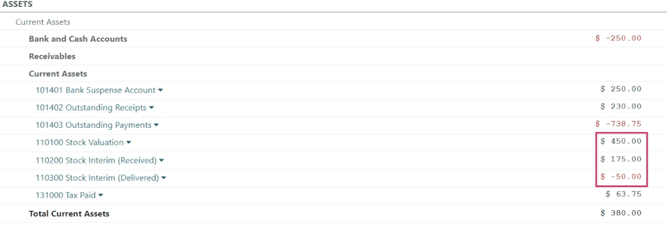

Inventory valuation configuration¶
All of a company’s stock on-hand contributes to the valuation of its inventory. That value should be reflected in the company’s accounting records to accurately show the value of the company and all of its assets.
By default, Odoo uses a periodic inventory valuation (also known as manual inventory valuation).
This method implies that the accounting team posts journal entries based on the physical inventory
of the company, and that warehouse employees take the time to count the stock. In Odoo, this method
is reflected inside each product category, where the Costing Method field will be set to
Standard Price by default, and the Inventory Valuation field will be set to Manual.
Alternatively, automated inventory valuation is an integrated valuation method that updates the inventory value in real-time by creating journal entries whenever there are stock moves initiated between locations in a company’s inventory.
Note
Automated inventory valuation is a method recommended for expert accountants, given the extra steps involved in journal entry configuration. Even after the initial setup, the method will need to be periodically checked to ensure accuracy, and adjustments may be needed on an ongoing basis depending on the needs and priorities of the business.
Types of accounting¶
Accounting entries will depend on the accounting mode: Continental or Anglo-Saxon.
Tip
Verify the accounting mode by activating the Developer mode (debug mode) and navigating to .
Then, in the search bar, look for Anglo-Saxon Accounting, to see if the feature is enabled. If it is not enabled, Continental accounting mode is in use.

In Anglo-Saxon accounting, the costs of goods sold (COGS) are reported when products are sold or
delivered. This means that the cost of a good is only recorded as an expense when a customer is
invoiced for a product. So for manual valuation method, set the Expense Account to
Stock Valuation for the current asset type; for automatic valuation method, set the the
Expense Account to an Expenses or a Cost of Revenue type (e.g. Cost of Production,
Cost of Goods Sold, etc.).
In Continental accounting, the cost of a good is reported as soon as a product is received into stock. Because of this, the Expense Account can be set to either Expenses or a Cost of Revenue type, however, it is more commonly set to an Expenses account.
Configuration¶
Make changes to inventory valuation options by navigating to . In the Inventory Valuation section, select the desired Costing Method and Inventory Valuation options.
Note
It is possible to use different valuation settings for different product categories.
Costing method¶
From the product category’s configuration page, choose the desired Costing Method:
Standard Price: the default costing method in Odoo. The cost of the product is manually defined on the product form, and this cost is used to compute the valuation. Even if the purchase price on a purchase order differs, the valuation will still use the cost defined on the product form.
Average Cost (AVCO): calculates the valuation of a product based on the average cost of that product, divided by the total number of available stock on-hand. With this costing method, inventory valuation is dynamic, and constantly adjusts based on the purchase price of products.
Note
When choosing Average Cost (AVCO) as the Costing Method, changing the numerical value in the Cost field for products in the respective product category creates a new record in the Inventory Valuation report to adjust the value of the product. The Cost amount will then automatically update based on the average purchase price both of inventory on hand and the costs accumulated from validated purchase orders.
First In First Out (FIFO): tracks the costs of incoming and outgoing items in real-time and uses the real price of the products to change the valuation. The oldest purchase price is used as the cost for the next good sold until an entire lot of that product is sold. When the next inventory lot moves up in the queue, an updated product cost is used based on the valuation of that specific lot. This method is arguably the most accurate inventory valuation method for a variety of reasons, however, it is highly sensitive to input data and human error.
Warning
Changing the costing method greatly impacts inventory valuation. It is highly recommended to consult an accountant first before making any adjustments here.
See also
When the Costing Method is changed, products already in stock that were using the Standard costing method do not change value; rather, the existing units keep their value, and any product moves from then on affect the average cost, and the cost of the product will change. If the value in the Cost field on a product form is changed manually, Odoo will generate a corresponding record in the Inventory Valuation report.
Inventory valuation¶
Inventory valuation in Odoo can be set to be updated manually or automatically. While Expense accounts apply to both, the Stock Input and Stock Output accounts are only used for automated valuation.
Refer to the Expense and Stock input/output sections for details on configuring each account type.
Expense account¶
To configure the expense account, go to the Account Properties section of the intended product category (). Then, choose an existing account from the Expense Account drop-down menu.
To ensure the chosen account is the correct Type, click the (right arrow) icon to the right of the account. Then, set the account type based on the information below.
In Anglo-Saxon accounting for automated inventory valuation, set the Expense
Account to the Expenses account. Then, click the (right arrow) icon to the right of
the account.
In the pop-up window, choose Expenses or Cost of Revenue from the Type drop-down menu.

To configure the Expense Account, choose Stock Valuation from the field’s drop-down menu. Verify the account’s type by clicking the (right arrow) icon, and then ensure the Type is Current Assets.

Set the Expense Account to the Expenses or Cost of Revenue account type.
Set the Expense Account to the Expenses or Cost of Revenue account type.
Stock input/output (automated only)¶
To configure the Stock Input Account and Stock Output Account, go to and select the desired product category.
In the Inventory Valuation field, select Automated. Doing so makes the Account Stock Properties section appear. These accounts are defined as follows:
Stock Valuation Account: when automated inventory valuation is enabled on a product, this account will hold the current value of the products.
Stock Journal: accounting journal where entries are automatically posted when a product’s inventory valuation changes.
Stock Input Account: counterpart journal items for all incoming stock moves will be posted in this account, unless there is a specific valuation account set on the source location. This is the default value for all products in a given category, and can also be set directly on each product.
Stock Output Account: counterpart journal items for all outgoing stock moves will be posted in this account, unless there is a specific valuation account set on the destination location. This is the default value for all products in a given category, and can also be set directly on each product.
In Anglo-Saxon accounting, the Stock Input Account and Stock Output Account are set to different Current Assets accounts. This way, delivering products and invoicing the customer balance the Stock Output account, while receiving products and billing vendors balance the Stock Input account.
To modify the account type, go to the click the (right arrow) icon to the right of the stock input/output account. In the pop-up window, choose Current Assets from the Type drop-down menu.

The Stock Input account is set to Stock Interim (Received), a Current Asset account
type.¶
In Continental accounting, the Stock Input Account and Stock Output Account are set to the same Current Assets account. That way, one account can be balanced when items are bought and sold.
Example
The stock input and output accounts are both set to Stock Interim (Received), a
Current Assets account type. They can also be set to the Stock Interim
(Delivered), as long as the input and output accounts are assigned to the same
account.

Inventory valuation reporting¶
To start, go to . At the top of the dashboard, change the As of field value to Today, and adjust the filtering Options to Unfold All in order to see all of the latest data displayed, all at once.
See also
Under the parent Current Assets line item, look for the nested Stock Valuation Account line item, where the total valuation of all of the inventory on hand is displayed.
Access more specific information with the Stock Valuation Account drop-down menu, by selecting either the General Ledger to see an itemized view of all of the journal entries, or by selecting Journal Items to review all of the individualized journal entries that were submitted to the account. As well, annotations to the Balance Sheet can be added by choosing Annotate, filling in the text box, and clicking Save.
